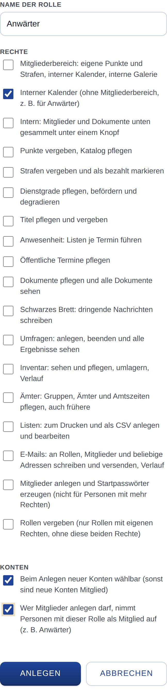

Rollen
Hier legst du fest, welche Rollen es gibt und was jede Rolle in der App darf. Wer welche Rolle bekommt, wählst du bei der Person in der Verwaltung (siehe Konto und Rolle).
So öffnest du die Seite
Tippe unten auf Verwaltung, dann auf Einstellungen und auf Rollen.
Was du hier siehst
- Liste der Rollen: je Rolle der Name, wie viele Personen sie haben (davon als Zusatzrolle) und ihre Rechte. Bei eigenen Rollen steht außerdem für neue Konten oder aufnehmen als Mitglied, wenn das eingestellt ist. Weicht der Punktefaktor von 1 ab, steht er als Abzeichen neben dem Namen, z. B. „×0,5“.
- Griff links neben jeder Rolle: zum Ändern der Reihenfolge.
- Ansehen: zeigt die App so, wie diese Rolle sie sieht (siehe App als Rolle ansehen). Bei Admin fehlt der Knopf.
- Bearbeiten: öffnet die Rolle zum Ändern.
- + Neue Rolle: legt eine weitere Rolle an.
- App ohne Anmeldung ansehen: zeigt die App, wie Besucher ohne Konto sie sehen.
- Anwesenheit: Gruppen im Zähler (nur wenn Anwesenheit an ist): als was jede Rolle in den Anwesenheitslisten zählt.
So gehst du vor
Eine Rolle anlegen
- Tippe auf + Neue Rolle.
- Trage den Name der Rolle ein (höchstens 30 Zeichen).
- Setze unter Rechte die Häkchen für alles, was die Rolle darf.
- Stelle bei Bedarf unter Konten ein, ob die Rolle Beim Anlegen neuer Konten wählbar ist und ob, wer Mitglieder anlegen darf, Personen mit dieser Rolle als Mitglied aufnimmt.
- Nutzt ihr Punkte und hat die Rolle den Mitgliederbereich, trage den Punktefaktor ein (z. B. 0,5 für die Hälfte).
- Tippe auf Anlegen.

Eine Rolle ändern oder löschen
- Tippe bei der Rolle auf Bearbeiten.
- Ändere Name, Rechte, Konten oder Punktefaktor und tippe auf Speichern. Mit Abbrechen verwirfst du die Änderungen.
- Zum Löschen einer eigenen Rolle tippst du stattdessen auf Löschen. Haben noch Personen die Rolle, wählst du vorher bei Beim Löschen bekommen die … Personen die Rolle, welche Rolle sie stattdessen bekommen. Bestätige die Rückfrage.
Die Reihenfolge ändern
- Halte eine Rolle am Griff links fest und ziehe sie nach oben oder unten. Am Computer geht das am Griff auch mit den Pfeiltasten.
- Lass los. Die App speichert die neue Reihenfolge sofort.
Festlegen, wie Rollen in der Anwesenheit zählen
- Wähle unter Anwesenheit: Gruppen im Zähler je Rolle Eigene Gruppe oder zählt als … eine andere Rolle.
- Tippe auf Gruppen speichern.
Die Rechte
Diese Rechte kannst du einer eigenen Rolle geben:
- Mitgliederbereich: eigene Punkte und Strafen, interner Kalender, interne Bilder der Galerie, dazu Intern. Jedes weitere Recht außer Interner Kalender und Intern setzt ihn voraus: Kreuzt du eines an, hakt die App den Mitgliederbereich mit an. Nimmst du ihn weg, entfallen alle anderen Rechte.
- Interner Kalender (ohne Mitgliederbereich, z. B. für Anwärter). Mit dem Mitgliederbereich ist er schon enthalten.
- Intern: Mitglieder und Dokumente stehen unten gesammelt unter dem Knopf Intern statt einzeln (siehe Intern). Das Recht ändert nur die Leiste unten, nicht, was die Person sehen darf: Dokumente sieht weiterhin nur, wer den Mitgliederbereich hat. Auch ohne Mitgliederbereich vergebbar (z. B. für Anwärter); mit ihm schon enthalten.
- Je Bereich mit eigenen Aufgaben ein Recht, zum Beispiel Punkte vergeben, Katalog pflegen oder Öffentliche Termine pflegen.
- Mitglieder anlegen und Startpasswörter erzeugen und Rollen vergeben.
Einstellungen, Updates und Datensicherung bleiben immer den Admins vorbehalten; dieses Recht kannst du keiner anderen Rolle geben.
Gut zu wissen
- Feste Rollen: Gast sieht nur öffentliche Inhalte. Mitglied ist die Rolle neuer Konten, mit dem Mitgliederbereich. Admin darf alles. Diese drei kannst du umbenennen, aber nicht löschen, und ihre Rechte lassen sich nicht ändern. Unter Bearbeiten siehst du ihre Rechte als Haken, die sich nicht umschalten lassen. Den Punktefaktor kannst du bei Mitglied und Admin ändern.
- Rollen der Bereiche: Schaltest du einen Bereich mit eigenen Aufgaben ein, kommt eine Rolle dazu, die wie der Bereich mit „verwalten“ dahinter heißt, z. B. „Punkte verwalten“. Sie hat den Mitgliederbereich und das Recht des Bereichs (siehe Bereiche).
- Grundrolle und Zusatzrollen: Jede Person hat genau eine Grundrolle und dazu auf Wunsch Zusatzrollen; sie hat die Rechte aller ihrer Rollen zusammen. Zusatzrollen können nur eigene Rollen und Rollen der Bereiche sein. Sie gibt es nur zu einer Grundrolle mit Mitgliederbereich.
- Punktefaktor: Er gilt beim Buchen, für neue Buchungen; alte bleiben, wie sie sind. Hat jemand mehrere Rollen, gilt der kleinste Faktor. Gast und Rollen ohne Mitgliederbereich haben keinen, weil sie keine Punkte bekommen.
- Reihenfolge: Sie gilt überall, wo Rollen stehen: in Auswahllisten, bei den Zusatzrollen und in den Zählern der Mitgliederliste und der Anwesenheit.
- Löschen: Hat jemand die gelöschte Rolle als Zusatzrolle, bekommt er die gewählte Ersatzrolle als Zusatzrolle, wenn das eine eigene Rolle ist; sonst fällt sie weg.
- Insgesamt gibt es höchstens 30 Rollen.
- Mit WordPress sind die Administratoren der Webseite die Admins der App. Diese Rolle vergibst du im WordPress-Backend, nicht in der App.
Beispiel Anwärter: Lege eine Rolle „Anwärter“ an, nur mit Interner Kalender, ohne Mitgliederbereich, mit Beim Anlegen neuer Konten wählbar und dem Häkchen zum Aufnehmen als Mitglied. Anwärter sehen dann den internen Kalender und das Schwarzes Brett und stehen in der Mitgliederliste und der Anwesenheit, bekommen aber keine Punkte oder Strafen. Der Name der Rolle steht in beiden Mitgliederlisten wie ein Titel neben dem Namen, auch in der öffentlichen unter Mitglieder. Später nimmt sie auf, wer Mitglieder anlegen darf.